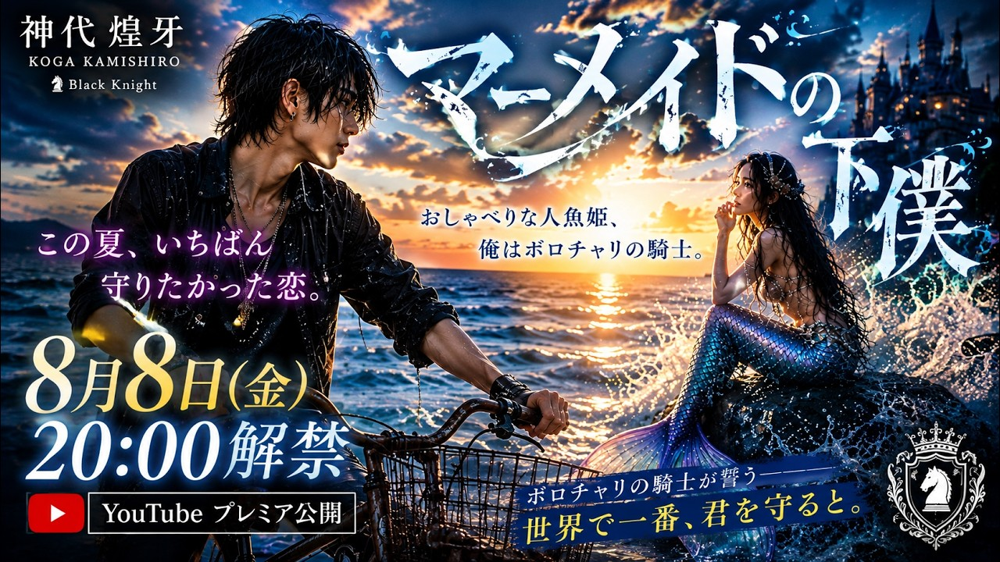

SUZUKA / MUSIC DISCOVERY
SUZUKAの音楽作品を、世界観とジャンルから探せます。
SUZUKAの架空のAIアーティストによるオリジナル作品を紹介しています。

恋愛曲、青春曲、ポップバラードなど、日本語ポップスを中心に紹介します。
人生、家族、記憶に寄り添う演歌・歌謡曲作品を紹介します。
K-POPの構成、ダンス、サウンド、ビジュアル要素を取り入れた作品です。
ヴィジュアル系、ダークロック、心理的世界観を持つ作品です。